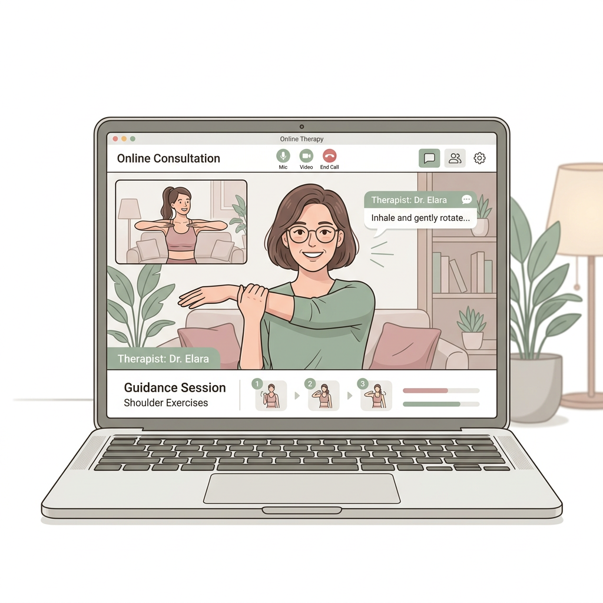
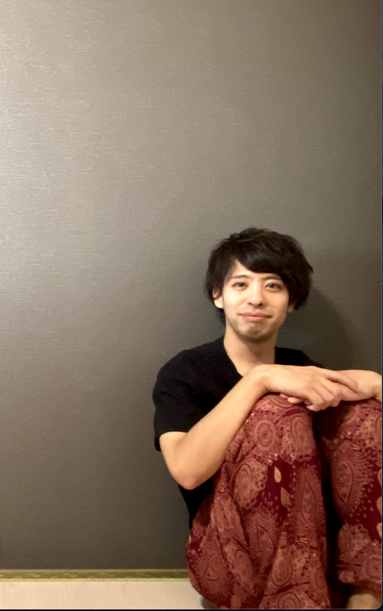

PUBLICATIONS
著書のご紹介
Kindleにて書籍を出版しております。
専門家としての知見をわかりやすくまとめました。
for your health
CONCERNS
膝や股関節の痛みで
歩くのがつらい
慢性的な肩こりや
頭痛に悩んでいる
長時間のデスクワークで
腰がつらい
何から始めていいか
わからない
猫背や反り腰が
気になる
病院に行くほどではないが
体調がすっきりしない
PHILOSOPHY
病院に行くほどではないけれど、
なんとなく身体の調子が悪い。
そんな小さな不調を、
誰に相談していいかわからない——
理学療法士として、
多くの患者さまと向き合ってきた中で、
「もっと早く相談してくれていたら」
と感じることが何度もありました。
身体の悩みは、
放っておくほど大きくなるもの。
だからこそ、
気軽に相談できる場所をつくりたい。
あなたの日常に寄り添い、
健やかな毎日をサポートする。
それが、この健康相談の想いです。
SERVICES
あなたのライフスタイルに合わせて
お選びいただけます
E-mail Consulting
お悩みをメールでお送りいただき、理学療法士が丁寧にアドバイスをお返しします。お好きな時間に、ご自身のペースでご相談いただけます。
忙しい方・まずは気軽に相談したい方におすすめ

Online Face-to-Face Consulting
ビデオ通話で直接お話しながら、お身体の状態を確認。あなたに合った運動指導もその場で行います。
しっかり相談したい方・運動指導を受けたい方におすすめ
※ 本サービスは健康に関するコンサルティング（アドバイス）です。「こんな運動はいかがでしょうか」「こういった食事に変えてみてはいかがでしょうか」「こういった生活習慣に変えてみてはどうですか」「こんなセルフケアがおすすめですよ」「そういった場合は病院に行った方が良いですよ」など、あくまで生活習慣や運動・食事に関するアドバイスを行うサービスです。
※ 法律上、疾患の診断・医療行為など、医師法や薬機法等に抵触する行為は行うことができません。予めご了承ください。
FLOW
ページ下部のフォームより、必要事項とご相談内容をご記入の上、送信してください。
理学療法士が内容を確認し、メールの返信にて丁寧に回答・アドバイスいたします。
専用フォームよりお申し込みください。担当者より日程調整のご連絡をいたします。
ビデオ通話で面談を実施し、運動指導などを行います。その後のフォローも行います。

PROFILE
Masaki Kudo - Physical Therapist
はじめまして。理学療法士の工藤正希です。
これまで14年間、整形外科領域を中心に関節痛専門の理学療法士として、3万人以上の方々のリハビリテーションに関わってまいりました。
日々の診療の中で、身体の痛みは単なる「関節や筋肉の問題」だけではないことに気づきました。
そこで、運動 × 食事 × 精神の3つを掛け合わせた独自の視点「ペイン・カスケード理論（Pain Cascade Theory）」を提唱しています。
「どこに行っても良くならない」「何が原因かわからない」といったお悩みに、多角的な視点からアプローチし、あなたに最適な解決策を一緒に見つけていきます。病院に行くほどではない小さな不調でも、ぜひお気軽にご相談くださいね。
PUBLICATIONS
Kindleにて書籍を出版しております。
専門家としての知見をわかりやすくまとめました。
VOICE
膝の痛みで整形外科に行くか迷っていた時に相談しました。自宅でできるストレッチを教えていただき、2週間ほどで痛みが和らぎました。病院に行く前に相談して本当によかったです。
デスクワークでの肩こりが本当にひどくて…。メールで相談したところ、姿勢のポイントや休憩時にできる運動を丁寧に教えてくださいました。とても助かっています。
運動を始めたいけど何からすればいいかわからず相談しました。オンラインで実際に動きを見てもらいながら指導してもらえるので、安心して運動を始められました。
FAQ
いいえ、医療行為は行いません。身体に関する一般的なアドバイスやセルフケアの方法、運動指導をご提供します。症状がひどい場合は、医療機関の受診をおすすめすることもあります。
関節痛、肩こり、腰痛、姿勢の悩み、運動不足、体力低下など、身体に関するお悩み全般をご相談いただけます。
インターネット環境と、カメラ付きのパソコンまたはスマートフォンがあればご利用いただけます。動きやすい服装でのご参加をおすすめします。
はい、何度でもご利用いただけます。継続的なフォローアップもお受けしております。
オンライン対面相談は1回約45〜60分を目安としています。メール相談はお好きなタイミングでお送りいただけます。
CONTACT / FORM
あなたの「からだの悩み」に理学療法士がお答えします。
以下のフォームよりメール相談（無料）をご利用いただけます。
オンライン対面相談（有料）をご希望の方はこちら
※現在準備中です